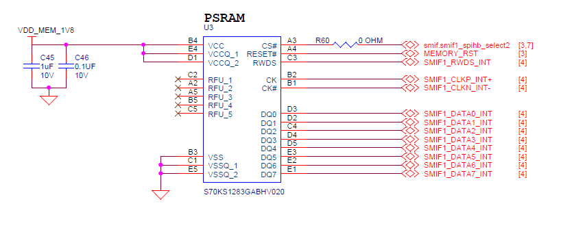

Edgi-Talk_M33_S_HyperRam 示例工程
中文 | English
简介
本示例工程基于 裸机 (Bare Metal) 架构，主要用于演示和配置 Secure M33 HyperRam 的相关功能。 同时，该工程也可作为二次开发或项目创作的基础模板，帮助用户快速上手并进行功能扩展。
HyperRAM 简介
1. 概述
HyperRAM 是一种由 Cypress（现 Infineon） 首次推出的 高性能低引脚数（Low Pin Count, LPC）DRAM。
它基于 HyperBus 接口，主要面向 嵌入式系统、显示控制、IoT 设备、汽车电子 等需要 高带宽、低功耗、简单接口 的应用。
HyperRAM 属于 pSRAM（Pseudo-SRAM，伪静态RAM），它在外部表现得像 SRAM（简单读写，无需用户刷新），但内部实际上是低功耗 DRAM（自刷新）。
2. 架构与接口
HyperRAM 使用 HyperBus 接口，其特点是：
引脚数少：通常仅需 13 个信号引脚（8-bit 数据总线 + 控制/时钟），相比传统 SDRAM（几十个引脚）大幅减少 PCB 复杂度。
双数据速率（DDR）传输：在时钟上升沿和下降沿传输数据，提高带宽。
串行控制协议：通过命令-地址-数据序列访问内存，简化设计。
接口结构如下：
数据线 DQ[7:0]：8 位双向数据
RWDS（Read-Write Data Strobe）：数据同步信号
CLK：时钟输入
CS#：片选信号
RESET#：复位
CKE：时钟使能
3. 工作原理
HyperRAM 通过 命令+地址+数据 的方式访问：
命令阶段
主机发送读/写命令和目标地址。
延迟阶段
HyperRAM 准备内部存储阵列（延迟可配置）。
数据传输阶段
以 DDR 方式在 DQ[7:0] 上传输数据，RWDS 提供数据同步。
内部采用 DRAM 技术，支持 自刷新，但对外表现为 “像 SRAM 一样” ——用户无需关心刷新操作。
4. 性能特性
数据总线宽度：8 位
工作电压：1.8 V 或 3.0 V 低功耗设计
数据速率：最高可达 400 MB/s（200 MHz DDR × 8-bit）
容量范围：32 Mb ~ 512 Mb（4 MB ~ 64 MB）
低功耗：支持深度睡眠模式，待机电流 < 10 µA
简单接口：13 根引脚即可完成高速访问
5. HyperRAM 的优势
低引脚数
与传统 SDRAM/PSRAM（30+ 引脚）相比大幅减少引脚需求，节省 PCB 走线。
高带宽
DDR 接口，带宽可达 400 MB/s，足以支持 图像缓存、显示刷新 等应用。
低功耗
适合电池供电设备，如 IoT、可穿戴设备。
易用性
对外表现类似 SRAM，简单易用，无需用户刷新。
6. 与其他存储的对比
特性 |
HyperRAM |
SDRAM / DDR |
SRAM |
NOR Flash |
|---|---|---|---|---|
接口 |
HyperBus (13-pin) |
并行 16~32 位 |
并行/串行 |
SPI/QSPI |
容量范围 |
32Mb ~ 512Mb |
64Mb ~ 1Gb+ |
小（Kb~Mb） |
4Mb ~ 2Gb |
带宽 |
~400 MB/s |
~800 MB/s+ |
~50 MB/s |
~100 MB/s |
功耗 |
低 |
较高 |
较低 |
较低 |
应用场景 |
缓存/帧缓冲 |
系统主存 |
高速小容量 |
程序存储 |
硬件说明
HyperRam接口

软件说明
工程基于 Edgi-Talk 平台开发。
示例涵盖以下内容：
安全区域配置
基本启动流程演示
工程代码结构简洁清晰，便于理解和移植。
使用方法
编译与下载
打开工程并完成编译。
使用 板载下载器 (DAP) 将开发板的 USB 接口连接至 PC。
通过编程工具将编译生成的固件烧录至开发板。
运行效果
烧录完成后，开发板上电即可运行示例工程。
系统将正常启动，并顺利跳转至 M33 内核，表明安全配置已生效。
注意事项
如需修改工程的 图形化配置，请使用以下工具打开配置文件：
tools/device-configurator/device-configurator.exe libs/TARGET_APP_KIT_PSE84_EVAL_EPC2/config/design.modus
修改完成后保存配置，并重新生成代码。
启动流程
系统启动顺序如下：
+------------------+
| Secure M33 |
| (安全内核启动) |
+------------------+
|
v
+------------------+
| M33 |
| (非安全核启动) |
+------------------+
|
v
+-------------------+
| M55 |
| (应用处理器启动) |
+-------------------+
⚠️ 请严格按照以上顺序烧写固件，否则系统可能无法正常运行。